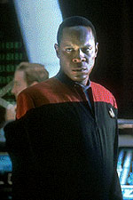
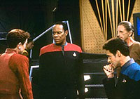
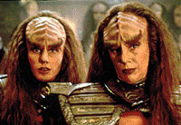

MANCHETE
DO EPISDIO
Conflito para testar lealdades de Kira
discute violncia versus diplomacia
Episdio
anterior | Prximo
episdio
Sinopse:
Data Estelar:
desconhecida.
O espao Bajoriano invadido por uma
nave Cardassiana que persegue Tahna Los, um membro de um grupo
terrorista conhecido por seus atos de violncia contra Cardssia,
durante e aps a ocupao.

O
foragido pede asilo poltico a Sisko. Kira resolve interceder
junto ao governo provisrio para garantir a segurana do
terrorista, aps ele ter revelado suas intenes de abandonar
os mtodos violentos.
No entanto, mais tarde a major descobre que Tahna Los pretende
contruir uma bomba poderosssima, com propsito desconhecido.
Kira encontra-se ento dividida entre suas lealdades para com o
"velho Bajor da poca da resistncia frente a ocupao
Cardassiana" e para com o "novo Bajor do voltil
governo provisrio e seu pedido de cooperao para a Federao".
Por fim, ela decide apoiar Sisko e evitar a ao terrorista de
Tahna, que pretendia explodir a Fenda Espacial.
Comentrios:
"Past Prologue" um episdio que mostra as
diferentes nuances para se chegar a um mesmo objetivo, a via poltica
e a via revolucionria. A primeira representada pela major
Kira, que busca seus objetivos no mais pela fora das armas,
mas pelas negociaes e a diplomacia.
J a segunda representada por Tahna Los, membro do Kohn-Ma, um
grupo terrorista que luta contra os Cardassianos em defesa dos
interesses Bajorianos. No fundo, ambos querem os mesmos objetivos.
A analogia lembra muito as diferenas de contraste entre o
conceito de Social-Democracia, que pretende a asceno do
comunismo de forma gradual e diplomtica dentro da sociedade, e o
Socialismo Revolucionrio pregado por Lenin, defendendo a luta
armada como forma de instituir uma sociedade mais justa.
Tanto o episdio quanto a realidade histrica mostraram a opo
mais saudvel.

Outro
destaque vai para o conflito entre Sisko e Kira sobre o pedido de
asilo de Tahna Los. Ele se mostra duro e
crvel. Em certo
momento, devido atitude da major de contatar o Comando da Frota
pelas suas costas, Sisko diz a Kira: "Passe por cima da minha
cabea novamente e eu servirei a sua em uma bandeja!"
Isso, aliado a uma interessante trama envolvendo Tahna, Bashir,
Garak, os Cardassianos e mesmo as Klingons Lursa e B'etor - irms
de Duras -, produz um episdio com bom valor de entretenimento,
sem esquecer dos seus personagens.
Quem recebe um tratamento especial Kira, com direito a uma
antolgica cena entre ela e Odo, em que o oficial de segurana
"decide" por ela o que ela deve fazer, aps a discusso
se encaminhar para tal deciso.
Ancorando o episdio temos a caracterizao totalmente
bidimensional de Tahna (e o fraco desempenho do ator Jeffery
Nordling).
Para surpresa de todos, um episdio do tipo "lealdades
testadas", na condio de apenas segundo episdio da srie,
emerge como um vencedor.
Citaes:
Tahna Los - "I
want Bajor for the Bajorans!"
("Eu quero Bajor para os Bajorianos!")
Trivia:
 Neste episdio ocorre a introduo antolgica de (em suas prprias
palavras) "plain, simple Garak". Elim Garak vivido
pelo extraordinrio ator Andrew J. Robinson.
Neste episdio ocorre a introduo antolgica de (em suas prprias
palavras) "plain, simple Garak". Elim Garak vivido
pelo extraordinrio ator Andrew J. Robinson.
Este o primeiro episdio que mostra a dupla Garak e Bashir em
ao.

H participaes de Gwynyth Walsh como B'Etor e Barbara March
como Lursa (as infames irms de Duras).
Susan Bay, que vive a Almirante Rolman neste episdio, esposa
de Leonard Nimoy.
Os crdito corretos para este episdio so: Kathryn Powers para
histria e Peter Allan Fields para roteiro.
Este o primeiro episdio em que a frase "Gold Press
Latinum" (traduzida para "ouro pra-ltinum")
usada.
Neste episdio citado pela primeira vez o grupo
extremista-terrorista-Bajoriano Kohn-Ma e o nome da clula de
resistncia de Kira durante a ocupao Cardassiana: Shakaar.
Ficha
tcnica:
Escrito por Kathryn Powers
Direo de Winrich Kolbe
Exibido em 11/01/1993
Produo: 004
Elenco:
Avery Brooks como
Benjamin Lafayette Sisko
Ren Auberjonois como Odo
Nana Visitor como Kira Nerys
Colm Meaney como Miles Edward O'Brien
Siddig El Fadil como Julian Subatoi Bashir
Armin Shimerman como Quark
Terry Farrell como Jadzia Dax
Cirroc Lofton como Jake Sisko
Elenco convidado:
Jeffery Nordling como Tahna Los
Andrew Robinson como Garak
Gwynyth Walsh como B'Etor
Barbara March como Lursa
Susan Bay como "a almirante"
Vaughn Armstrong como Gul Danar
Richard Ryder como "segurana
Bajoriano"